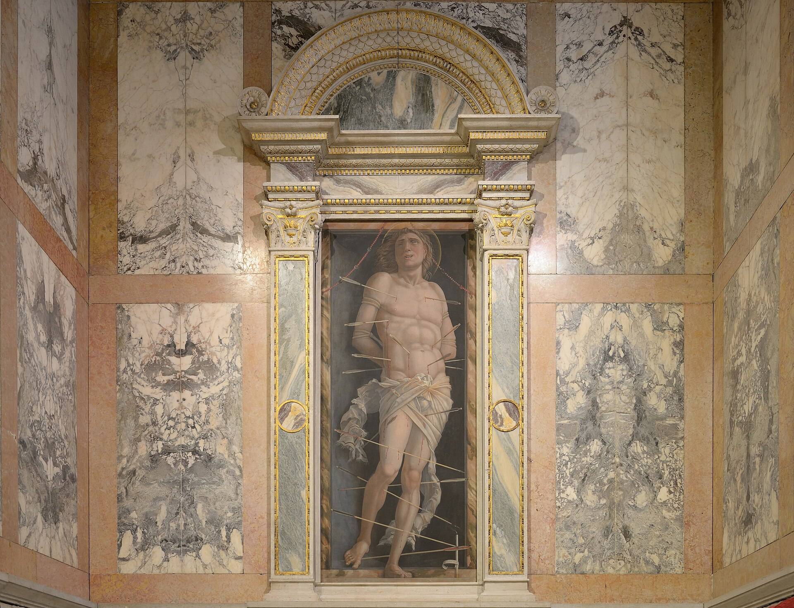

1421-1440 年为检察官马里诺·孔塔里尼建造的临水府邸，威尼斯哥特“花式”（flamboyant）风格的巅峰：不对称三段立面、镂空尖拱柱廊、原本的镀金与彩绘装点（故名“黄金宫”）。1916 年男爵弗朗凯蒂捐赠为国家博物馆，藏曼特尼亚《圣塞巴斯蒂安》与文艺复兴雕塑。
看点路线
Il Percorso
- 1从水上巴士或对岸看立面全景--不对称三段的经典构图
- 2临水柱廊的四叶花窗（quatrefoil）细看
- 3内庭的井头（1427，Bon 工坊）
- 4二层波尔泰戈大厅 + 弗朗凯蒂收藏（曼特尼亚《圣塞巴斯蒂安》）
建筑看点
Ca' d'Oro · 6 个细节
不对称三段临水立面
每层开间数不同--这反映了中世纪威尼斯府邸的产权制度：一栋楼可由多家族分层持有，立面即“产权分割图”。拉斯金在《威尼斯之石》里为此立面画过整套测绘图。
镂空尖拱柱廊
四叶花窗 + 簇柱 + 尖拱的“花式哥特”语汇--像石头做的蕾丝。它成为后来两百年威尼斯府邸立面的模板。
曾经的金与彩
立面原本镀金并施彩（故称“黄金宫”）：檐口残存的镀金与朱红痕迹仍可辨认。19 世纪的修复揭开了部分后世覆盖层。
井头
内庭的大理石井头出 Bon 工坊--威尼斯没有泉水，全城饮水靠 campi 的井集雨水、经沙层过滤。井头是府邸的“水银行”。
波尔泰戈大厅
贯通前后水门与陆门的中央大厅--威尼斯府邸的“脊柱”：前半卸货办公、后半生活。这个平面原型被全城复制了几百年。

《圣塞巴斯蒂安》
曼特尼亚晚年的“箭下圣者”在弗朗凯蒂收藏中--与他卢浮宫的版本同题异构。画中大理石柱的考古式细节，是这位北意大利人文主义者的签名。
历史故事
Le Storie
壹孔塔里尼的“账本”
黄金宫的建造者马里诺·孔塔里尼（Marin Contarini）是威尼斯检察官。奇迹般地，他的建设工程账本完整存世--从中世纪建筑史的角度看，这比宫殿本身还珍贵。
账本记录了每一笔支出：从木桩基础的打桩费到金箔的采购量（立面镀金用了真金），甚至记录了工匠的名字与工时。
通过这本账，历史学家还原了整栋楼的建造过程--包括立面的彩绘方案（朱红 + 金箔 + 靛蓝，远比今天“素雅”的石色要浓烈）。
贰拉斯金的“石头情书”
约翰·拉斯金在《威尼斯之石》中把黄金宫作为威尼斯哥特府邸的最佳标本：他为立面绘制了整套测绘图，赞美它的比例与花窗。
拉斯金认为，哥特的不规则（asymmetry）与手工艺的“不完美”恰恰是生命力的体现--与文艺复兴的机械对称形成对照。黄金宫的不对称立面正是这一理论的完美证据。
维多利亚时代的英国因为这本书爱上了威尼斯哥特--伦敦与曼彻斯特的一代建筑师在图纸桌上模仿着大运河的花窗。
叁芭蕾舞星的“阳台改造”
19 世纪中叶，黄金宫的主人是俄裔芭蕾舞明星玛丽亚·塔格里奥尼（Marie Taglioni）--历史上第一位跳“足尖舞”的传奇。
她对宫殿进行了自己的“改造”：加装了阳台与窗户--后世修复时这些“非哥特”的添加被拆除，但她的名字留在了宫殿的产权史上。
一位芭蕾明星拥有一座哥特蕾丝般的宫殿：大运河的故事总是比小说更戏剧。
肆弗朗凯蒂的捐赠
1894 年，男爵乔治奥·弗朗凯蒂买下破败的黄金宫，开始系统修复--他甚至从托尔切洛岛搬来了 12 世纪的马赛克地面，铺在内庭。
1916 年他把整座宫殿与全部收藏捐赠给意大利国家--黄金宫从此成为博物馆。今天馆内的雕塑、绘画与纺织品收藏都源于他的品味。
一位贵族用二十多年修复一座府邸然后捐给国家--意大利的“文物回归国家”传统里，他是标杆人物之一。
伍威尼斯府邸的“平面学”
黄金宫的平面是威尼斯府邸的教科书：中央“波尔泰戈”大厅（portego）贯通水门与陆门--前半是卸货与办公的“商业区”，后半是家庭的“生活区”。
大运河的一线府邸同时是仓库、银行与住宅--威尼斯商人的“商住一体”建筑原型。水门直接进货上二楼。
理解了这个平面，你就理解了威尼斯财富的物理结构：运河即马路、门厅即柜台。
陆井与水：城市的“隐藏基础设施”
威尼斯没有泉水，全城的淡水靠天：每个 campo 的井头收集雨水，经过沙层过滤后储入地下蓄水池--黄金宫内庭的这口井（1427，Bon 工坊）是私家版本的同类系统。
直到 19 世纪从大陆引水，威尼斯人喝了千年的“过滤雨水”。井头因此成为社区的心脏：取水、聊天、洗菜都在此。
黄金宫的大理石井头雕工精美--水的基础设施也可以是艺术品，这是威尼斯的态度。
柒“大运河是世界上最美的街道”
拿破仑（一说 19 世纪的多位旅行作家）称大运河为“世界上最美的街道，两边是最好的宫殿”--黄金宫是这条街上的明珠之一。
从 Romanesque 到巴洛克再到现代，大运河的立面像一条时间轴：乘 1 号线从罗马广场到圣马可，45 分钟看完威尼斯 700 年建筑史。
黄金宫位于中段最精彩的一公里：与对岸的 Pesaro 宫、Rezzonico 宫互相打量了几百年。
捌曼特尼亚的《圣塞巴斯蒂安》
馆藏中最著名的画作是曼特尼亚的《圣塞巴斯蒂安》（传）：箭下的圣者靠在一根古典残柱上，背景的云与大理石带着考古学的精确--这位帕多瓦大师把“古代”画进了基督教题材。
曼特尼亚是威尼斯画派的女婿（他娶了贝利尼的妹妹），他的考古式写实深刻影响了整个北意大利。
这幅画与卢浮宫的同题版本隔空呼应--一题两作，是艺术家给自己出的“变奏练习”。
玖黄金宫的“立面竞赛”
中世纪的威尼斯贵族在大运河上进行的“立面竞赛”：你家柱廊花、我家更花；你家镀金、我家贴青金石。黄金宫的鎏金立面就是这场竞赛的巅峰出手。
这种竞赛的副产品是：威尼斯的运河立面几乎每一栋都是“定制款”--没有两栋相同的府邸。与佛罗伦萨与罗马的“家族式统一”形成鲜明对照。
看立面竞赛的最佳方式：坐慢速 1 号线，把每一栋的柱廊层数与开间数当作“暗号”来读。
拾从码头看它的正确方式
黄金宫的最佳观看不是站在门前，而是从水上接近：1 号线船行至 Ca' d'Oro 站之前的最后一个弯，立面全貌在水面展开。
黄昏时段：夕阳从西边打来，立面的镂空花窗在墙上投下复杂的影子--白天的蕾丝在傍晚变成剪纸。
对岸的 T Fondaco 商场（前德国商馆）屋顶露台可俯拍：黄金宫 + 大运河 + Rialto 方向的构图一网打尽。
参观贴士
Consigli Pratici
- 最佳观看方式：坐 1 号线水上巴士在 Ca' d'Oro 站下船--船行中看立面比站在对岸更完整
- 博物馆动线短（45 分钟），与 Rialto 市场或圣洛克连成半日线路
- 周一只开上午--排行程注意
- 对岸的 T Fondaco 商场屋顶露台可俯拍黄金宫与大运河（免费但需预约时段）
顺路同游
Da Non Perdere